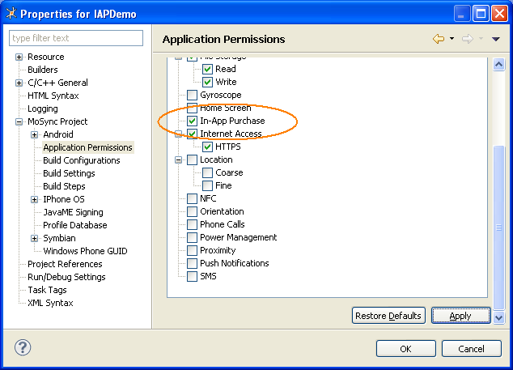
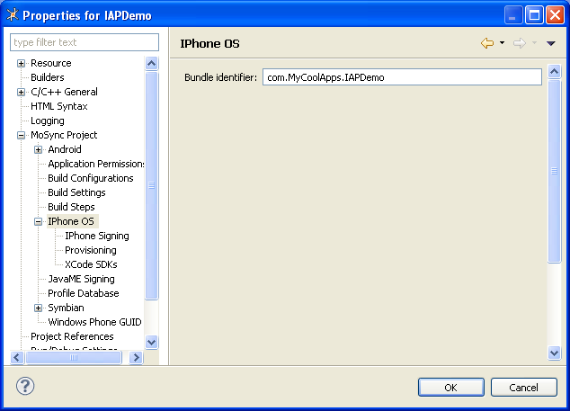
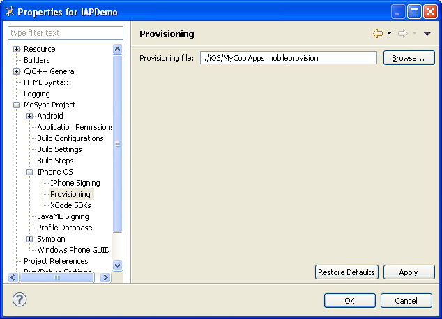
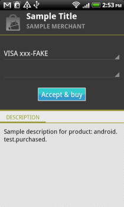
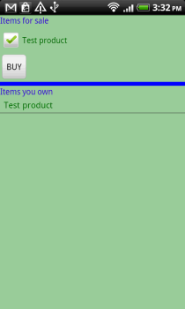
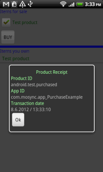

With our Purchase C API and its C++ Library wrapper you can easily offer your user in-app purchases, and manage their transaction and refund status and history. Products that you offer your users can include subscriptions to content, software upgrades, and related products. In this tutorial we will lead you through the steps of creating an app that uses the Purchase C++ Library.
In-App Billing is a Google Play service that lets you sell digital content from inside your Android apps. Apple offer a similar service called In-App Purchasing for iOS apps through iTunes.
When your app uses one of these services, it sends a billing request for a specific product. The service then handles all of the checkout details for the transaction, including requesting and validating the form of payment and processing the financial transaction.
When the checkout process is complete, the service sends your application the purchase details, such as the order number, the order date and time, and the price paid.
At no point does your application need to handle any financial transactions; that is all done by the Google Play or Apple iTunes service.
As well as this tutorial, we provide other resources that can be helpful when creating an app that uses in-app purchasing/billing:
Start by creating a new NativeUI project:
Now, for Android devices, you should set the application permissions for in-app purchases so that your app can register and receive Google Play messages. (This setting is not required by iOS devices, but should be set for a true cross-platform app.) To do this:

For iOS projects you need to do two things. First set the bundle identifier. This is the ID that will be used to uniquely identify your application package on an iOS device (for example "com.MyCoolApps.IAPDemo"):

Second, for iOS, set up the project's provisioning profile by pointing it to the provision file -- that's the file that you get when you have registered with Apple as a developer and go through the iOS Provisioning Portal:

The main things you need to do in your application code are:
You might also want to store all your purchase information to a database, so the users will see how many products (and of which type) they have purchased, even if the application gets closed. See Database API for more information.
In the main.cpp file in the project, add the #include directive for the PurchaseManager and the IAP namespace, then use the checkPurchaseSupported method to check that in-app purchasing/billing is supported on the device.
#include <MAUtil/Moblet.h>
#include <IX_WIDGET.h>
#include <Purchase/PurchaseManager.h>
using namespace MAUtil;
using namespace IAP;
NativeUIMoblet::NativeUIMoblet()
{
int result = PurchaseManager::getInstance()->checkPurchaseSupported();
if ( result != MA_PURCHASE_RES_OK )
{
maAlert("Error", “Purchase is not supported”, "OK", NULL, NULL);
}
else
{
// Create Application controller.
mController = new ApplicationController();
}
}
The layout of your user interface will of course reflect the purpose of your app. Take a look at our PurchaseExample application to see how we did it. There we created a MainScreen class to serve as our user interface. The MainScreen class has two sections:
For each purchased item a receipt is available. When one of the purchased items is selected, a dialog shows its receipt details.
Before any purchase request can be made from Google Play, you need to set your Android developer public Key. (This is available in your Android Developer Console. Always check that the key you provide is not malformed: the syscall should return MA_PURCHASE_RES_OK).
And before a purchase request can be made to Apple iTunes you need to set the iOS store URL for receipt validation.
PurchaseManager::getInstance()->setPublicKey(“Your key here”); PurchaseManager::getInstance()->setStoreURL(sAppStoreSandboxURL);
Create a class for handling all events that are related to in-app purchases. This will be the ApplicationController class and it will be responsible for updating the UI whenever a purchase event is detected.
To create this class, first add the #include directives for the Purchase library files:
#include <Purchase/Purchase.h> #include <Purchase/PurchaseListener.h> #include <Purchase/PurchaseManager.h> #include <Purchase/Receipt.h>
(If you want, you can also include PurchaseManagerListener.h to listen for events that notify the user of restored transactions or refunds.)
Then add the PurchaseListener to the ApplicationController class:
class ApplicationController:
public PurchaseListener
{
Now, implement the listener methods:
virtual void productValid(const Purchase& purchase)
{
// Product has been validated. We can now request a purchase:
mPurchase->requestPurchase();
}
virtual void productInvalid(const Purchase& purchase)
{
// Notify UI that the product cannot be purchased.
mMainScreen->productError("Product " + purchase.getProductId() + “ is invalid!”);
}
virtual void requestInProgress(const Purchase& purchase)
{
mMainScreen->productEvent(“Server receive request, in progress...”);
}
virtual void requestCompleted(const Purchase& purchase)
{
// Notify the UI that a product was pruchased.
mMainScreen->productPurchased(purchase.getProductId);
}
virtual void requestFailed(const Purchase& purchase)
{
mMainScreen->productError("Purchase failed for product " + purchase.getProductId()) ;
}
virtual void receiptValid(const Purchase& purchase,Receipt& receipt)
{
// Display the dialog containing the receipt information.
mMainScreen->fillReceiptDialog(receipt.getAppID(), receipt.getProductID(),
receipt.getTransactionDate(), receipt.getTransactionID(),
receipt.getVersionExternalID(), receipt.getBID());
}
virtual void receiptInvalid(const Purchase& purchase)
{
mMainScreen->productError("Product " + purchase.getProductId()+ " has an invalid receipt!");
}
virtual void receiptError(const Purchase& purchase, const int errorCode)
{
mMainScreen->productError("Product " + purchase.getProductId()+ " does not have a receipt!");
}
Now add the code that leads the user through a purchase. This consists of several steps, generally performed in the following order:
In our PurchaseExample application there is a list of available products from which you can choose:
void MainScreen::createProductIdList()
{
if ( getPlatform() == ANDROID )
{
/**
* This Android test productId can be bought multiple times.
* If you want to run the example for your own product ids,
* add them to the mProductIdList list.
*/
mProductIdList.add(sGooglePlayPurchasedProductId);
}
else
{
// Add you own product Ids, even if it’s just for testing.
mProductIdList.add("Your own product ID");
}
}
When a product is selected, and the Buy button is pressed, the ApplicationController will create a Purchase object with that productId.
The Purchase constructor sets the parent as the listener so that it will receive purchase events: PurchaseListener::productValid, and PurchaseListener::productInvalid.
void ApplicationController::buttonClicked(Widget* button)
{
Purchase* purchaseObj = new Purchase(
mMainScreen->getSelectedAvailableProduct(), this);
mPurchases.add(purchaseObj);
mCurrentPurchase = mPurchases.size()-1;
}
From now on, the current purchase object will point to mCurrentPurchase, and all purchases will be held in the mPurchases vector.
After the product assigned to mCurrentPurchase is validated ( receives PurchaseListener::productValid event), the ApplicationController will call mCurrentPurchase->requestPurchase() that will launch the checkoutUI ( the platform independent UI that handles the financial transaction details).
First, make sure that you have met the prerequisites for running your application.
When you test on Android, make sure you follow the steps listed in the official help page for testing http://developer.android.com/guide/market/billing/billing_testing.html , so that you will be able to test both reserved products and your own products.
Transfer the application to a device and run it. If the device supports in-app purchasing/billing, you will see a list of your available products. In our example app, when the user selects one of the available products, the checkout UI launches and enables the user to enter his personal credit card information:

If everything goes OK the history list of purchased items is updated.

There is a receipt available for each purchase (except for the unmanaged products), and the user can check it by selecting one of them:
